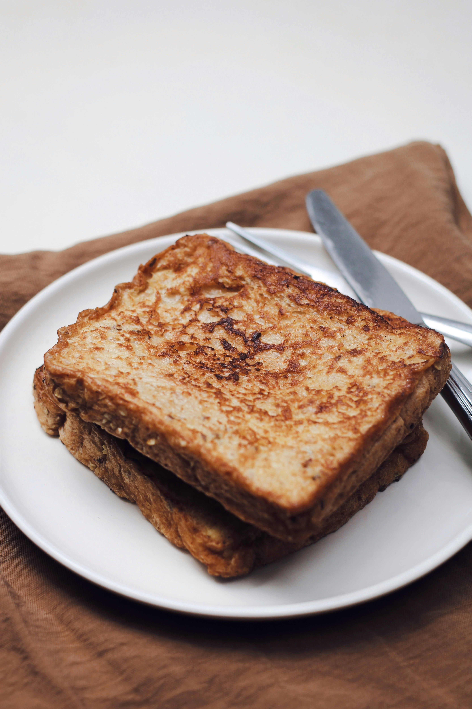

French Toast

Photo by
montatip lilitsanong
on
Unsplash
Golden and Delicious Breakfast
French toast is made by dipping bread into a sweet egg and milk mixture
before cooking it until golden brown.
Serve it with fruit, honey, syrup, or powdered sugar for a delicious
breakfast.
Ingredients
- 4 slices bread
- 2 eggs
- 1/2 cup milk
- 1 tablespoon sugar
- 1/2 teaspoon cinnamon
- 1 tablespoon butter
- Honey or syrup
Steps:
- Whisk eggs, milk, sugar, and cinnamon together.
- Dip each slice of bread into the mixture.
- Heat butter in a pan.
- Cook the bread until golden brown.
- Flip and cook the other side.
- Repeat with remaining bread.
- Serve warm with honey or syrup.